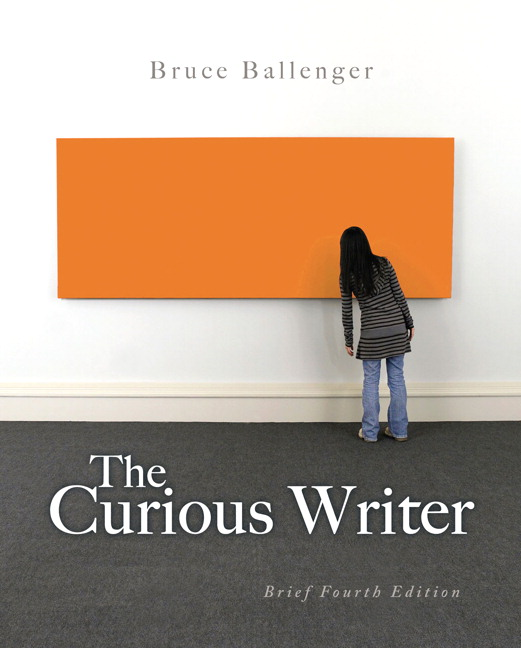

Textbook detail
The Curious Writer

Overview
The Curious Writer emphasizes the inquiry-based approach to composition, encouraging students to explore topics through genuine curiosity. Ballenger provides a guide for transforming personal observations into academic discourse through trial and error. This text is ideal for developing a unique authorial voice while mastering the fundamentals of research and writing.
Book info
- ISBN
- 978-1-4028-9462-9
- Edition
- 4th Edition
- Category
- Writing
- Pages
- 388